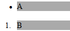

RG1001: IE6 IE7 IE8(Q) 中 UL 和 OL 标记为实现放置 LI 元素标记框 'outside' 设置时所使用的样式设定不同于其他浏览器
标准参考
关于 'list-style-position' 属性说明请参照 W3C CSS 2.1 规范： http://www.w3.org/TR/CSS21/generate.html#propdef-list-style-position
问题描述
IE6 IE7 IE8(Q) 中 UL 标记为实现放置 LI 元素标记框 'outside' 设置时所使用的样式设定不同于其他浏览器。
造成的影响
IE6 IE7 IE8(Q) 内 LI 元素样式内设置了 ‘list-style-position:outside’ 后其溢出容器的标记框会被裁切。
受影响的浏览器
| IE6 IE7 IE8(Q) |
|---|
问题分析
'list-style-position' 特性的主要说明标记框 (marker box) 在主块框 (LI) 的位置，他的默认值是 'outside'。在 CSS 2.1 规范中没有明确说明标记框的位置，但是说明在 'outside' 特性值设置情况下，如果 'direction' 特性值为 'ltr' 时，标记框应该存在于内容左侧，当 'direction' 特性值为 'rtl' 时，标记框应该存在于内容右侧。
正是由于规范中存在定义模糊，各个浏览器对此情况实现均有不同。通常情况下，LI 标记由 UL 标记和 OL 标记包裹，分析以下代码：
<ul style="background:#CCC;"> <li style="background:#AAA;">A</li> </ul> <ol style="background:#CCC;"> <li style="background:#AAA;">B</li> </ol>
实际运行结果：
| IE6 IE7 IE8(Q) | IE8(S) Firefox Safari Chrome Opera |
|---|---|
|  |  |
可以明显看出，不同浏览器中 UL 和 OL 元素的背景显示不同。在 IE6 IE7 IE8(Q) 中没有显示出背景颜色。根据盒模型分析，他们的默认 margin 和 padding 值不同。
继续加入样式检测代码，来验证这个假想：
if(!window.getComputedStyle){
window.getComputedStyle=function($target){
return $target.currentStyle;
};
}
var ul = document.getElementsByTagName("ul")[0];
var ol = document.getElementsByTagName("ol")[0];
alert('UL default display value:'
+ getComputedStyle(ul,null).display
+ "\n"
+ 'OL default display value:'
+ getComputedStyle(ol,null).display
+ "\n"
+ 'UL margin-left value:'
+ getComputedStyle(ul,null).marginLeft
+ "\n"
+ 'UL padding-left value:'
+ getComputedStyle(ul,null).paddingLeft
+ "\n"
+ 'OL margin-left value:'
+ getComputedStyle(ol,null).marginLeft
+ "\n"
+ 'OL padding-left value:'
+ getComputedStyle(ol,null).paddingLeft
+ "\n"
)
运行结果汇总如下：
| IE6 IE7 IE8(Q) | IE8(S) Firefox Safari Chrome Opera | |
|---|---|---|
| UL default display value: | block | block |
| OL default display value: | block | block |
| UL margin-left value: | 30pt | 0px |
| UL padding-left value: | 0px | 40px |
| OL margin-left value: | 30pt | 0px |
| OL padding-left value: | 0px | 40px |
从实际运行结果可以看出 IE6 IE7 IE8(Q) 内实现 UL OL 标记样式时使用的 'margin' 值设定，而其他浏览器则用 'padding' 值设定。
现将 UL OL 标记的 'margin:0' 样式设置加入，分析以下代码效果：
<ul style="margin:0;background:#CCC;"> <li style="background:#AAA;">C</li> </ul> <ol style="margin:0;background:#CCC;"> <li style="background:#AAA;">D</li> </ol>
显示效果如下表：
| IE6 IE7 IE8(Q) | IE8(S) Firefox Safari Chrome Opera |
|---|---|
 |
 |
明显的，由于其 margin 值被设置为0，导致 IE6 IE7 IE8(Q) 中 UL OL 标记内的 LI 元素，标记框 ( marker box ) 从左侧溢出标记容器而没有被显示。
同理，在 IE8(S) Firefox Safari Chrome Opera 浏览器中，标记框可以显示是因为，他们中 UL OL 标记都是用 'padding' 值定位内部元素位置。如果将 'padding' 值设置为 0，同样会出现 IE6 IE7 IE8(Q) 中的情况。
解决方案
可以将 IE6 IE7 IE8(Q) 浏览器的 UL OL 标记 'margin-left' 和 'padding-left' 特性值更改为与其他浏览器样式一致。
例如：
ul,ol{margin-left:0;padding-left:40px;}
参见
知识库
相关问题
测试环境
| 操作系统版本: | Windows 7 Ultimate build 7600 |
|---|---|
| 浏览器版本: |
IE6 IE7 IE8 Firefox 3.5.6 Chrome 4.0.266.0 dev Safari 4.0.4 |
| 测试页面: | ul_and_ol_tag_margin_and_padding_value.html |
| 本文更新时间: | 2010-07-21 |
关键字
UL list-style list-style-type marker box margin padding 列表